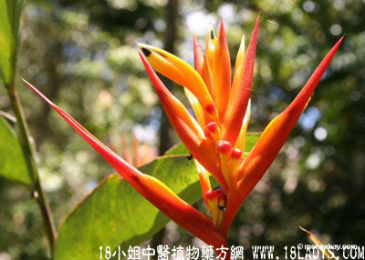

蕉花(中药材植物名:甘蕉)(植物科目:芭蕉科)

别名：蕉蕾。
植物名：甘蕉。
生长环境：本品为多年生粗壮草本。栽培于果园。
分布：广植于热带各地。
入药部分：花。
采集期：夏、秋采花。
自采地点：家种。
性味：性微凉、味dan功能：去湿热、止痢。
主治、用量感和用法：1、胃痛：干用5钱至1两，清水煎服，或加猪瘦肉同煎；2、红白痢；3、痔疮：干用5钱至1两，清水煎服，并外洗患处；4、干用5钱至1两，清水煎服。
（方歌）蕉花姹紫与嫣，秋来采集好加工，胃痛痔疮红白痢，便后见红亦可松。
参考资料：《广东省中医验方交流汇编》治出腐骨方：用大蕉树头擂烂敷患处。
《广州常用草药验方集解》介绍治疗枪伤、烧伤、炸弹伤经验方：蕉树选心一味，将药捶烂，敷于伤处。有加速金疮愈合，使异物从伤处自然排出之效。
（方歌）枪炮弹伤有验方，蕉树选心一味当，将药捶烂敷患处，能排破片愈伤疮。